Os jogos eletrônicos estão presentes na nossa vida há quase um século, carregando uma grande história de inovações tecnológicas e impactos culturais nas sociedades de forma global. Eles desempenham um papel crucial na indústria do entretenimento e na cultura popular, com uma história rica que remonta ao início da computação.
Desde os primeiros jogos de computador até aos modernos jogos online e de realidade virtual, a importância dos jogos eletrónicos reside na sua capacidade de entreter, educar, socializar e até mesmo fornecer terapia.
Curiosamente, os primeiros jogos não eram voltados ao entretenimento comercial, mas sim a experimentações tecnológicas.
A história dos jogos eletrônicos começou como uma vertente experimental da ciência da computação, voltada inicialmente para aplicações acadêmicas e demonstrações tecnológicas, e não com propósitos comerciais.
Tennis for Two” (1958) foi um dos primeiros jogos eletrônicos interativos. Criado por William Higinbotham, o jogo simulava uma partida de tênis em um osciloscópio. O objetivo era ilustrar de forma acessível e divertida os potenciais da tecnologia para visitantes de um laboratório de física.
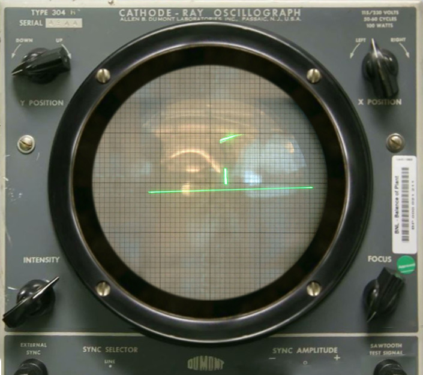
“Spacewar!” (1962), desenvolvido por Steve Russell e colegas do MIT, foi um marco técnico e conceitual. Era um jogo de combate espacial para dois jogadores, que simulava física realista (gravidade de uma estrela central) e exigia habilidade e estratégia. Tornou-se o primeiro jogo a ser distribuído amplamente em ambientes universitários.
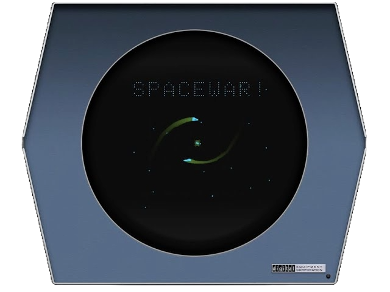
Esses jogos evidenciam o início do potencial lúdico dos computadores, mesmo em uma época em que esses equipamentos eram caros, grandes e acessíveis apenas a universidades e instituições de pesquisa.
Com o avanço da microeletrônica, foi possível miniaturizar circuitos e baratear os equipamentos. Isso permitiu a criação dos primeiros fliperamas (arcades) e dos consoles domésticos.
A Atari, fundada por Nolan Bushnell, lançou o jogo “Pong” (1972), inspirado no “Tennis for Two”. Foi o primeiro grande sucesso comercial dos videogames. Inicialmente instalado em bares e estabelecimentos públicos, “Pong” se tornou símbolo do nascimento da indústria dos jogos eletrônicos.

Paralelamente, surgem os primeiros consoles caseiros, como o Odyssey da Magnavox (1972), com jogos embutidos e cartuchos rudimentares. Sequencialmente, o mercado começa a se diversificar.
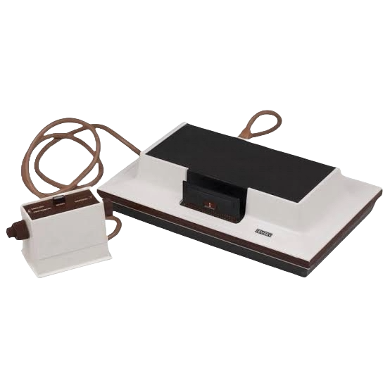
A década de 1970 consolidou os jogos como produtos comerciais, ainda que simples em termos gráficos e jogabilidade. A experiência era focada em desafios curtos e repetitivos, voltados à obtenção de pontuações máximas.
Durante os anos 1980, o mercado cresceu vertiginosamente, com a entrada de diversas empresas.
O aumento da oferta, sem controle de qualidade, gerou uma crise. O Atari 2600 popularizou os consoles domésticos. Jogos como Space Invaders (1978), Pac-Man (1980) e Donkey Kong (1981) tornaram-se ícones da cultura pop. Pac-Man, inclusive, foi um dos primeiros jogos com personagem próprio e comportamento reconhecível.
 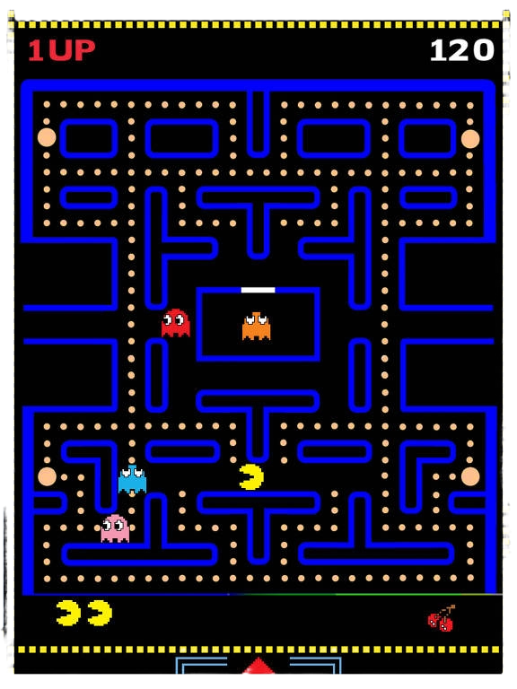
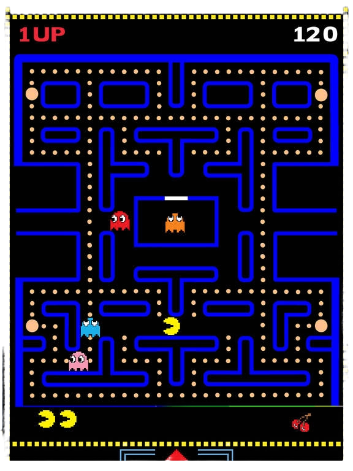
Contudo, a busca por lucros rápidos gerou jogos mal acabados e repetitivos. Um exemplo emblemático foi “E.T. the Extra-Terrestrial” (1982), que teve um desenvolvimento apressado para aproveitar o sucesso do filme. O jogo fracassou comercialmente e é frequentemente apontado como símbolo da crise.
A crise de 1983 foi marcada por excesso de jogos ruins, perda de confiança dos consumidores e queda vertiginosa nas vendas de consoles. Muitas empresas saíram do mercado, especialmente nos EUA.
A recuperação veio do Japão, com a entrada da Nintendo, que aplicou um controle rigoroso de qualidade e adotou estratégias inovadoras.
O Nintendo Entertainment System (NES), lançado em 1985, revitalizou o mercado. Jogos como Super Mario Bros. introduziram fases, narrativa progressiva, personagens carismáticos e maior profundidade de jogabilidade.
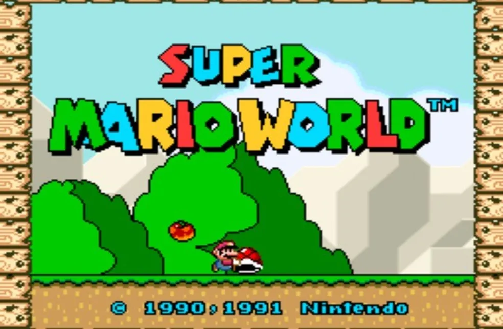
Além disso, a Nintendo criou franquias com mascotes fortes (Mario, Zelda, Metroid) e estabeleceu um novo modelo de negócios, com licenciamento de jogos e acessórios.
A Nintendo salvou a indústria e deu início à ideia de jogos como experiências narrativas, indo além do desafio e da “pontuação”.
Os anos 1990 foram marcados por transformações técnicas e narrativas: surgem consoles de 16 e 32 bits, como Super Nintendo, Sega Genesis, PlayStation e Nintendo 64, que trazem gráficos mais ricos, efeitos sonoros avançados e novos gêneros de jogo.
O uso do CD-ROM permite incluir vídeos, músicas orquestradas e grandes mundos abertos. Exemplos: Final Fantasy VII, Resident Evil, Metal Gear Solid.
Os computadores pessoais (PCs) tornam-se plataformas populares para gêneros como FPS (Doom, Quake), jogos de estratégias em tempo real (Warcraft, Age of Empires) e simuladores (The Sims, SimCity).
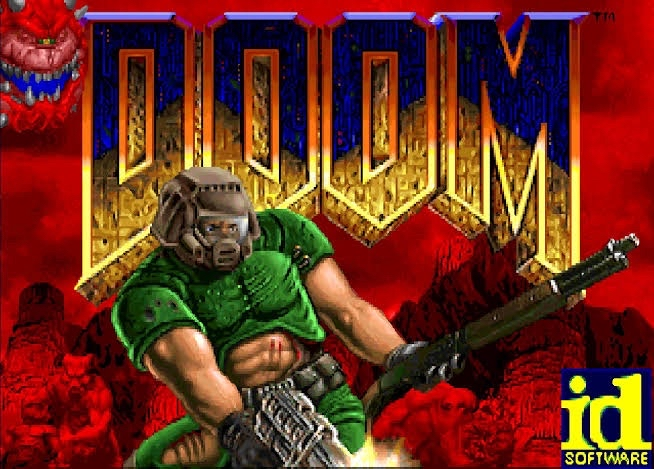Jogos de luta e corrida também ganham destaque com títulos como Street Fighter II, Mortal Kombat e Gran Turismo.
Essa década fortaleceu a ideia dos jogos como produtos culturais complexos, com valor estético, narrativo e social.
A partir dos anos 2000, os jogos eletrônicos atingem um novo patamar: consolidação dos jogos online, uma diversificação e popularização de gêneros diferentes, a ascensão do profissionalismo competitivo como um tipo de entretenimento para o público e o cruzamento dos jogos com outras mídias (cinema, arte…).
Consolidação dos jogos online, com plataformas como Xbox Live e PlayStation Network. MMORPGs como World of Warcraft redefinem interação e sociabilidade. Jogos mobile transformam celulares e tablets em plataformas de massa. Títulos como Angry Birds e Candy Crush alcançam públicos variados, inclusive fora do perfil “gamer tradicional”.
Explosão de jogos indie: pequenos estúdios conseguem criar jogos inovadores e aclamados (Braid, Undertale, Celeste) graças a plataformas de distribuição digital como Steam e Itch.io.
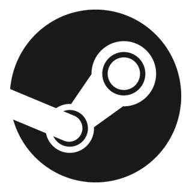
eSports: a profissionalização dos jogos competitivos cria um novo setor de entretenimento, com ligas, transmissões ao vivo e prêmios milionários.
Além disso, os jogos - games - passam a dialogar com o cinema, a literatura e as artes visuais. Títulos como The Last of Us e Red Dead Redemption 2 são exemplos de narrativa cinematográfica no universo dos games.
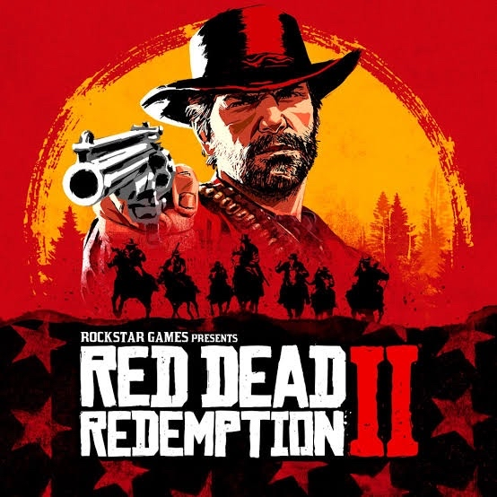
Você sabia? Os videogames agora são os novos “gigantes do entretenimento”
Se antes os filmes ocupavam o topo do entretenimento global, hoje esse posto já tem um
novo dono. Em 2023, a indústria dos videogames alcançou um feito histórico: seu
faturamento chegou a impressionantes 188 bilhões de dólares, superando com folga os 77
bilhões arrecadados pela indústria cinematográfica no mesmo período.
O crescimento explosivo dos jogos em smartphones transformou o modo como as pessoas
se relacionam com o universo dos games. Com títulos mais acessíveis, jogabilidade intuitiva
e um mercado em constante renovação, os jogos mobile conquistaram uma fatia gigantesca
do público. Para se ter uma ideia, sozinhos, esses jogos movimentaram 92,6 bilhões de
dólares — quase o mesmo que os consoles e os computadores somados.
Esse novo cenário revela algo ainda mais impactante: jogar videogame já não é mais um
hábito de nicho. Hoje, estima-se que mais de 3,3 bilhões de pessoas no mundo se
conectam com jogos eletrônicos, representando quase metade da população do planeta. O
público está cada vez mais diverso, mais engajado, mais exigente. Dos fãs de grandes
sagas como Starfield aos usuários casuais que se divertem em partidas rápidas no celular
enquanto esperam o metrô, os games se tornaram parte da rotina global.
A popularização dos jogos eletrônicos é um processo que se desenvolve de maneira
contínua e estruturada há anos, mas que se intensificou consideravelmente nos últimos
ciclos de inovação tecnológica. A introdução da nova geração de consoles — como o Xbox
Series S, o PlayStation 5 e o Nintendo Switch — proporcionou avanços significativos em
desempenho gráfico, tempos de carregamento e experiências de imersão. Paralelamente, a
consolidação dos dispositivos móveis como plataformas de jogos robustas e acessíveis
contribuiu decisivamente para a ampliação da base de usuários. Essa convergência entre
acessibilidade e alta capacidade técnica resultou em um ecossistema inclusivo, no qual
diferentes perfis de jogadores conseguem interagir, consumir conteúdo e participar
ativamente de comunidades virtuais conectadas em tempo real.
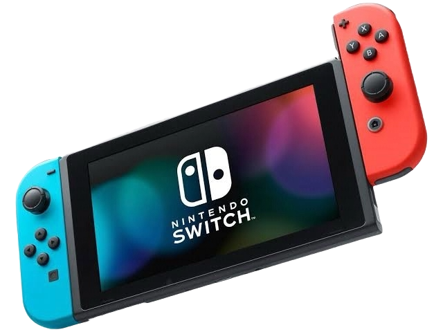
No Brasil, o mercado também mostra sinais claros de amadurecimento, ainda que com
características próprias. Por aqui, o alto custo dos lançamentos faz com que o consumidor
médio compre apenas dois ou três jogos por ano. Isso torna os lançamentos de peso ainda
mais decisivos: são eles que concentram a atenção, o investimento e o desejo dos
jogadores brasileiros. Nesse cenário, fidelizar o público com experiências de alto impacto e
boa rejogabilidade não é só uma boa estratégia: é uma necessidade.
Mais do que uma forma de lazer, os jogos eletrônicos hoje são um espaço de socialização,
criatividade e até aprendizado. Plataformas como Twitch e Discord ampliaram o
ecossistema gamer, permitindo que o ato de jogar vá muito além da tela. Os games são
palco de comunidades, torneios internacionais e até eventos ao vivo dentro dos próprios
jogos, como concertos e lançamentos cinematográficos.
Com o avanço das tecnologias imersivas, como realidade virtual e aumentada, inteligência
artificial e streaming em nuvem (Gamepass), a tendência é que os games se tornem cada
vez mais presentes, mais acessíveis e mais integrados à vida cotidiana.
A indústria de games no Brasil, embora ainda seja considerada pequena em termos de
produção nacional, vive um momento de expansão significativa e começa a ganhar
protagonismo no cenário internacional. Em 2022, o mercado brasileiro movimentou US$ 2,7
bilhões e a expectativa é que atinja US$ 3,5 bilhões até 2025. O país já ocupa a 5ª posição
mundial em número de jogadores e a 10ª em faturamento com games. Esse consumo é
impulsionado principalmente pelos smartphones, escolhidos por 48,8% dos jogadores,
seguidos por consoles e computadores. Hoje, cerca de 73,9% da população brasileira joga
algum tipo de jogo eletrônico, o que mostra o quanto o hábito está disseminado.
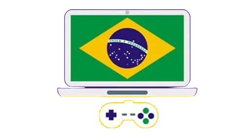
Na parte da produção, o Brasil conta atualmente com 1.042 estúdios de desenvolvimento de
jogos — um salto impressionante de 177% em apenas cinco anos. Esses estúdios
faturaram juntos US$ 252,6 milhões em 2022, o que corresponde a cerca de 10% do valor
gasto em jogos no país, mostrando que ainda há uma grande dependência de produtos
importados. Apesar disso, o mercado nacional já demonstra vocação exportadora: 65% dos
estúdios brasileiros têm receitas vindas do exterior, aproveitando também a vantagem da
desvalorização do real frente ao dólar.
Outro indicativo de amadurecimento é o fato de que 45% dos estúdios possuem entre 5 e
15 anos de existência, e 93% já desenvolveram propriedades intelectuais próprias. Além
disso, 51% atuam também como prestadores de serviços terceirizados para outros estúdios,
nacionais e estrangeiros, o que amplia as possibilidades de faturamento e inserção no
mercado global.
No campo do financiamento, os obstáculos ainda são relevantes. Cerca de 46% das
empresas contam com recursos próprios, familiares ou de amigos para se manter. Apenas
16% têm apoio de publicadoras internacionais, 8% recebem investimentos anjo e apenas
5% contam com aportes de fundos de venture capital. Em contrapartida, 27% conseguem
acessar editais específicos para jogos digitais, 18% se beneficiam de políticas públicas do
setor audiovisual, 11% de editais voltados à tecnologia e 4% utilizam incentivos fiscais.
Esse conjunto de dados revela um setor em construção, mas com bases sólidas. A indústria
brasileira de games mostra criatividade, capacidade técnica e ambição para crescer e
conquistar espaço no mercado global, transformando o país de um grande consumidor em
um produtor cada vez mais relevante de conteúdo interativo digital.
Como os jogos são feitos? Descubra o processo por trás do desenvolvimento de um game!
Quando jogamos um videogame, seja no computador, no celular ou em um console, a experiência vai muito mais além. Temos uma história sendo contada, trilhas sonoras, gráficos impressionantes e personagens marcantes. Todos esses elementos se combinam para que seja um game.
Mas você já parou para pensar em como tudo isso é criado?
Apesar dos jogos – games – estarem cada vez mais presentes no nosso cotidiano, o processo de desenvolvimento por trás deles ainda é uma incógnita para muitas pessoas.
O processo de desenvolvimento de um jogo
No mundo do desenvolvimento de jogos, existe um caminho que muitos projetos costumam seguir, seja em grandes estúdios ou por desenvolvedores independentes.
Esse processo é dividido em algumas etapas principais: a concepção da ideia, seguida pela criação de um documento que organiza e detalha o projeto. Depois, vem a fase de desenvolvimento, onde o jogo começa a ser feito.Em seguida, são realizados os testes para garantir que tudo funcione bem, até chegar o momento tão esperado: o lançamento do jogo.
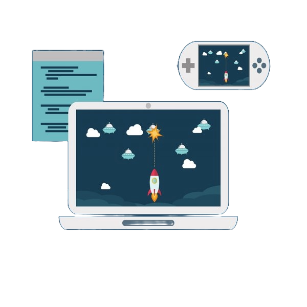
1. A idealização do jogo
Ter uma ideia do jogo é o principal e o primeiro passo para que o jogo comece a ser desenvolvido. Para isso, temos as seguintes perguntas:
- Como serão os personagens e cenários? - Qual será o estilo do jogo? - Qual história será contada? - O que o jogador vai conseguir fazer? - O que o jogador não vai conseguir fazer? - Qual o objetivo de cada fase do jogo?
É crucial ter estas respostas para que o processo de desenvolvimento seja guiado.
Também é importantíssimo definir qual tipo de jogo será desenvolvido: 2D, 3D, mobile, de realidade virtual etc.
2. Construção de rascunho
Após a fase de concepção da ideia, chega o momento de criar os primeiros testes do jogo: é a etapa em que surgem os protótipos (ou seja, o rascunho de tudo). O objetivo é experimentar e validar as mecânicas principais:
- O jogo é divertido? - Faz sentido? - Está funcionando conforme o planejado?
Essa fase é essencial para avaliar a capacidade de execução do projeto e identificar possíveis falhas, que servirão como base para melhorias ao longo do desenvolvimento.
Os protótipos (a construção do rascunho) podem ser feitos de duas formas: no papel ou em formato digital. 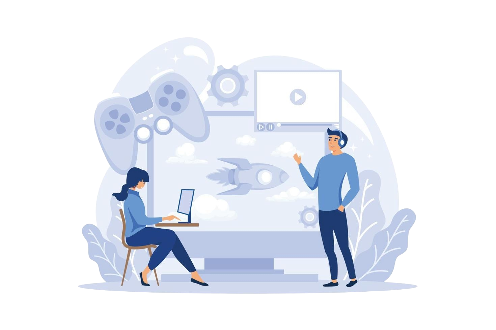
- A versão em papel é uma forma rápida e simples de visualizar conceitos, testando regras, estética e jogabilidade. - Já o protótipo digital, criado em plataformas como Unity ou Construct, permite que as pessoas interajam diretamente com o jogo e sintam como ele funciona na prática.
Neste momento, os gráficos e o visual não são prioridade necessariamente. O foco está em entender se o jogo será divertido e tem potencial para que sigam com o projeto.
3. Game Design Document (GDD): o guia do seu jogo
Depois de definir a ideia do jogo, é hora de organizar tudo de forma clara, por isso, nessa hora, usamos o Game Design Document (GDD) - Documento de Design de Jogo traduzido em português. Esse documento é um guia completo de todo o projeto que reúne as principais informações sobre como o jogo será desenvolvido.
Será nele que você deve detalhar pontos importantes, como:
• (exemplos de um GDD de um jogo qualquer)
- A ideia do jogo
- Como será a jogabilidade
- Qual o objetivo principal do jogo
- Estilo visual e artístico
- Tema central
- Mecânicas e interações
- Estrutura dos níveis
- Tipos de inimigos
- Sons e efeitos sonoros
- Referências visuais ou conceituais
Para qualquer jogo, quanto mais completo o GDD, melhor. Ele serve como um manual de criação, ajudando a equipe no projeto desde o início até a fase final.
Se o desenvolvimento estiver sendo feito por uma equipe, o GDD se torna ainda mais essencial.
4. Desenvolvimento do jogo
Com o GDD feito, finalmente, entra o desenvolvimento do jogo. Um jogo pode ser desenvolvido por uma equipe ou até mesmo por uma pessoa.
Curiosidade: O melhor exemplo de um jogo desenvolvido por uma pessoa é o Stardew Valley. Desenvolvido por Eric Barone, também conhecido como ConcernedApe. Ele assumiu todas as responsabilidades do desenvolvimento, incluindo programação, arte, música e narrativa.
Como funciona o desenvolvimento de um jogo quando se tem uma equipe, como ele é desenvolvido e, por quem?
Quando se tem uma equipe, ela pode ser composta por diversas funções, como:
- Programadores
- Designers de jogos
- Artistas (2D e 3D)
- Animadores
- Compositores de música
- Sound designers
- Writers (escritores de diálogo)
- Testadores.
O tamanho e a complexidade de um projeto influenciam diretamente na quantidade de pessoas envolvidas, porém, de forma geral, algumas funções são essenciais para que um jogo seja desenvolvido do início ao fim.
Cada profissional cuida de uma parte específica do projeto, e depois tudo é reunido para formar o jogo completo. Já quando alguém decide criar um jogo sozinho, essa pessoa acaba assumindo várias funções ao mesmo tempo, como no exemplo citado mais acima: Eric Barone assumiu todas as funções que seu jogo exigia.
É nesse momento que o GDD (Game Design Document) se torna importantíssimo. Ele que ajuda a equipe/o profissional a manter a visão do jogo clara e organizada durante o processo de desenvolvimento.
5. Testes
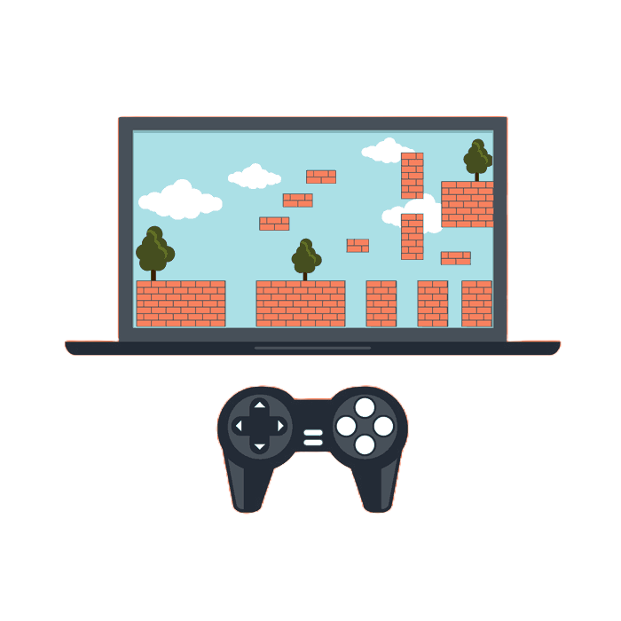 Durante o desenvolvimento de um jogo, é imprescindível que ele seja testado várias vezes. Os testes ajudam a identificar erros e pontos que podem ser melhorados. Resolver esses problemas é fundamental, pois, se o jogo for lançado com falhas, isso pode prejudicar bastante a experiência dos jogadores, algo crucial, já que o sucesso e o lucro dependemm propriamente deles.
Quanto mais o jogo for testado, mais polido e completo ele fica.
Curiosidade: um exemplo famoso é o Cyberpunk 2077, que foi lançado com muitas falhas. Os jogadores, que estavam com grandes expectativas, encontraram diversos bugs (falhas e erros), como carros que se moviam sozinhos e personagens atravessando paredes e objetos. Mesmo após várias atualizações, alguns erros continuaram, o que acabou frustrando muitos jogadores.
6. Publicação do jogo
Depois de passar por todos os testes e receber as melhorias necessárias, o jogo é pronto para ser lançado.
Atualmente, existem várias plataformas onde é possível publicar jogos, tanto gratuitas quanto pagas. Algumas das principais são:
- Para desktop: Steam, Epic Games
- Para mobile: Apple Store, Google Play Store
- Para console: Playstation Store, Microsoft Store
Vale lembrar que, mesmo depois de lançado, o jogo pode continuar recebendo atualizações, melhorias e muito mais. Isso acontece porque a equipe pode querer corrigir novos erros ou até adicionar conteúdos extras, deixando o jogo ainda mais completo. Isso, inclusive, mantém o público com esperanças e o número de jogadores se mantém/aumenta/continua fluído, evitando que o jogo seja esquecido.
Entrevistamos Davi Alvarenga, um desenvolvedor Sênior que atuou na empresa da Riot como Desenvolvedor Júnior por meio de um contrato com uma empresa de consultoria, e permaneceu 2.5 anos trabalhando em vários projetos na área de desenvolvimento Web para a Riot.
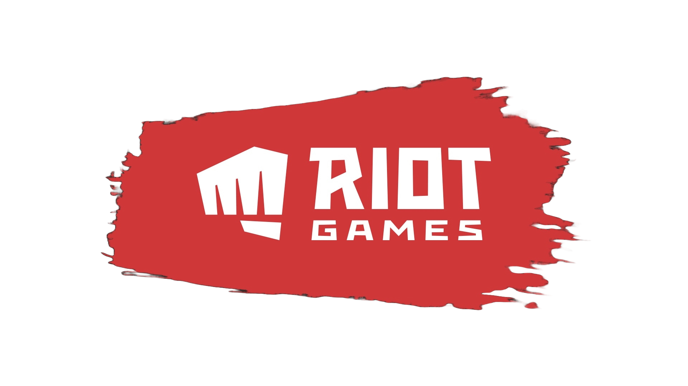Atualmente, seu contrato chegou ao encerramento, então a entrevista foi sobre o seu passado nessa empresa, ainda que não trabalhe mais para esta.
-P1. Qual é o seu cargo e quais são suas principais responsabilidades na empresa?
Minhas responsabilidades eram basicamente de desenvolvimento mesmo, eu fazia parte de um time interno lá, que desenvolvia ferramentas internas para outros times de desenvolvimento utilizarem, como por exemplo, Uma parte do sistema que a gente desenvolveu era de fazer contas de testes para todos os tipos de jogos possíveis.
Então imagina que era um serviço que gerava essas contas para as equipes testarem. E é o mesmo serviço que gera contas para todos os jogos da Riot.
Se você entra num jogo da Riot hoje, ele tem um launcher e todos os jogos estão nesse launcher, mas você usa a sua mesma conta para jogar os jogos diferentes.
Aí tem algumas particularidades para cada jogo. A principal diferença desse sistema é que antes eles faziam muita planilha, era muito manual. E a gente conseguia criar contas de teste em grupos, né?
Então, por exemplo, eu podia criar um grupo de contas de teste de mil contas de uma vez, assim, meio que com informações genéricas para eles só distribuírem essas contas e já começarem a usar, entendeu?
-Então, vocês meio que automatizaram?
Isso, a gente ajudou na automatização das criações de contas. Ele era um sistema web interno, que só o pessoal da Riot tinha acesso, ou não só o pessoal da Riot, mas as pessoas que a gente liberava o acesso direto também.
E eu era full stack, mas eu sempre, na minha carreira, fui mais atuando no front-end mesmo. Então, eu atuei mais no front-end nesse projeto, apesar de ter trabalhado um pouquinho com Golang no back-end lá também.
Foi majoritariamente front-end usando React e TypeScript e algumas outras ferramentas menores.
Eu participava das reuniões de planejamento, do sistema, de refinamento, de negociação com o cliente também. Você era um engenheiro, mas você acabava participando bastante em toda a concepção do produto em si. Não fica só no desenvolvimento.
-P2. Qual era a sua rotina de trabalho em um estúdio de jogos?
É uma rotina bem parecida, inclusive, de todos os projetos que tenho trabalhado desde que comecei a trabalhar para fora. Eles contratam por horário. Não tem uma jornada de trabalho como é no Brasil. Então, eles esperam que eu trabalhe oito horas por dia, mas isso não significa que eu trabalhe as oito horas por dia.
É meio que bastante confiança nesse sentido de, eles não vão ficar cobrando exatamente as oito horas, eles vão cobrar só que eu tenha entregado as coisas que a gente tem combinado em todos os planejamentos e etc.
-P3. Como você chegou até essa área de games? Sempre quis trabalhar com isso?
É uma ótima pergunta. Eu sou um jogador de LoL desde a primeira temporada, então conheço o jogo há muito tempo. No começo, na faculdade, eu pensava muito em trabalhar nessa área, porém conforme foi passando o tempo minha carreira acabou indo para um caminho diferente, envolvendo a web que fica mais distante de jogos.
Para trabalhar para fora, trabalhamos para uma empresa de consultoria, e é essa empresa que faz gestão do meu contrato com a Riot. Logo, o contrato é direto com essa empresa de consultoria, e não diretamente com a Riot.
Logo depois de finalizar o trabalho com tal cliente, fiquei sem trabalhos por um tempo até que uma oportunidade de vaga com eles surgiu. Era uma vaga voltada para a minha área, que tinha como objetivo fazer eu trabalhar nesses sistemas internos da Riot, que servia para auxiliar os times de jogos e etc.
Foi sensacional. Para fazer o teste, fizeram uma única chamada de vídeo comigo. Me perguntavam sobre decisões de design de arquitetura de sistemas, como eu tomaria essas decisões e o resto foi só na conversa, sem live coding, e depois fui chamado para entrar no time. Fiquei com eles 2 anos e meio e foi a empresa/time que mais gostei de trabalhar, foi o produto que eu mais gostei de trabalhar e eu voltaria a trabalhar com eles outra vez, sem dúvida alguma. Foi maravilhoso.
-P4. Na sua opinião, quais são os desafios enfrentados por uma empresa de jogos atualmente?
Jogos podem ser divididos sobre vários subgêneros. Nesses subgêneros são várias áreas diferentes, estratégias diferentes para lidar com o mercado.
Existe uma platéia de jogos enorme em relação a jogos online, mas diferente dos outros jogos, é um público que não possui um aumento grande ou significante, diferente do resto das áreas, esse público tende a ficar mais estagnado. O único que teve um recente sucesso foi o Fortnite, que conseguiu chegar até no público infantil. Enfim, em relação a jogos online, é um público alto que mesmo assim, é difícil ter um aumento significativo comparado ao resto dos outros gêneros.
Para mim, os desafios seriam você conseguir entender as tendências do mercado e conseguir a tempo de “surfar” nessa onda da tendência. Outro problema do desenvolvimento de jogos é que geralmente ele demanda muito tempo, um jogo precisa de bastante tempo antes de ser lançado. É muito demorado. Conseguir entender as tendências e desenvolver um jogo baseado nelas a tempo é algo bem difícil.
Outro problema seria a pirataria, já que os jogos atualmente estão cada vez mais caros e é algo que os jogos single-player (além do resto claro) sofrem bastante nesse sentido, eles sofrem muita pirataria por conta da alta do preço. É algo que o mercado tem que lidar.
Para você ser um desenvolvedor de jogos, precisa ter muita paixão envolvida. Porque é algo arriscado, é uma área bem difícil e concorrida, uma área em que as empresas grandes dominam o mercado. Para mim sempre será uma área bem mais difícil do que as outras de desenvolvimento.
-P5. Quais foram os maiores aprendizados que você teve trabalhando nessa empresa?
Eu acho que uma das coisas é que você precisa ser alguém humilde, demonstrar vulnerabilidades te torna uma pessoa mais querida para o time, confiam melhor em você e vocês crescem com mais facilidade. Saber pedir ajuda ajudou muito na minha carreira e por sorte, meu time era muito fácil nesse sentido.
Outra coisa também foi a habilidade que desenvolvi a “não ter medo de problemas”. Mesmo escutando algumas vezes sobre um problema que eu nunca ouvi falar na minha vida, não tive medo em dizer que consigo fazer esse trabalho, mesmo não sabendo como resolver exatamente na hora. Não ter medo de lidar com problemas e resolver eles, mesmo sendo um desafio, é algo muito importante e que eu acho que é uma habilidade muito valorizada no mercado, mas que se têm pouco. É muito pouco explorada pelos desenvolvedores, mas que as empresas gostam muito. As pessoas passam a te valorizar mais e você também passa a se valorizar mais, porque você vê que dá conta da coisa. Tudo isso serve como um aprendizado, no final das contas.
1. Estatística Descritiva
Análise de dados de gameplay: número de mortes por nível, tempo médio por fase, taxa de conclusão, etc.
Game Analytics: identificação de padrões de comportamento para equilibrar dificuldade, monetização ou mecânicas.
Dashboards com gráficos de desempenho dos jogadores.
Exemplo
Num jogo estilo RPG:
● Coletar dados de jogadores que abandonam o jogo antes do nível 5.
● Analisar se existe correlação entre o tipo de personagem escolhido e a taxa de desistência.
● Ajustar o balanceamento ou tutorial com base nesses dados.
2. Geometria Analítica e Álgebra Linear
● Transformações 2D/3D: translação, rotação, escala.
● Vetores e matrizes: essenciais para movimentação, colisões, física e câmeras.
● Sistemas de coordenadas: localizações de objetos e personagens no espaço do jogo.
● Quaternions: rotação suave em 3D, evitando o problema do “gimbal lock”.
Exemplo
● Num jogo de plataforma 2D:
● Usar vetores para mover o personagem com base na força aplicada (tecla pressionada).
● Calcular colisão entre hitbox do personagem e plataformas com equações de retas.
● Rotacionar um objeto em torno de outro com matriz de transformação.
FPS 3D:
● Usar álgebra linear para projetar a câmera com perspectiva correta.
● Calcular iluminação via vetores normais e produtos escalares.
3. Introdução à Computação
● Linguagens de programação (como C#, Python, JavaScript, C++): lógica do jogo.
● Algoritmos básicos: busca, ordenação, loops, estruturas condicionais.
● Estruturas de dados: arrays, listas, árvores (usadas, por exemplo, em sistemas de diálogos ou árvores de habilidades).
Exemplo:
● Em um jogo de tabuleiro virtual:
● Usar loops para gerar dinamicamente o tabuleiro.
● Usar listas para armazenar as peças e suas posições.
● Criar lógica condicional para detectar vitória.